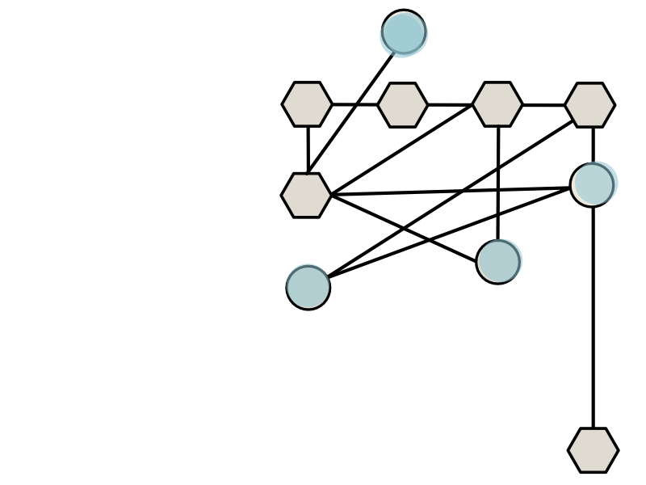
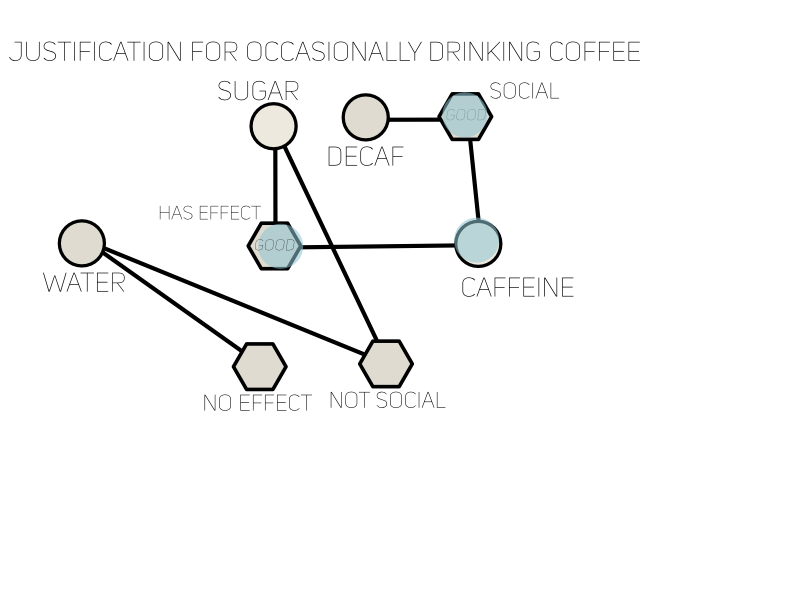

the website manifesto as a representation of the digital self

Top Left
Top Right
Bottom Right
this is the "avatar,"
my thought process after a life of computer usage

Bottom Left
Top Left
Top Right
Bottom Right
Centered